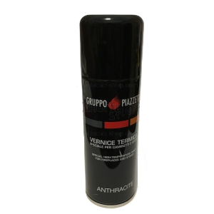

Questo è un attizzatoio, uno strumento utilizzato per ravvivare il fuoco. L'estremità viene utilizzata per muovere il carbone o la legna. In questo modo si ravviva la fiamma, si favorisce una combustione più efficace e si incrementa la temperatura contribuendo a mantenere l'ambiente caldo e confortevole.

Questo è un piano salvapavimento, è un accessorio progettato per proteggere il pavimento circostante da eventuali danni causati dal calore, dalle scintille o da eventuali schizzi di combustibile che potrebbero fuoriuscire dalla stufa o dal camino.
I tubi sono componenti fondamentali dei sistemi di evacuazione dei fumi prodotti dalla combustione in stufe a legna, stufe a pellet, caminetti o caldaie a biomassa. Questi tubi sono progettati per condurre in sicurezza i gas di scarico verso l'esterno dell'edificio. Il prezzo varia in base al tipo di tubo.
Un paracalore è un componente progettato specificamente per proteggere le pareti circostanti e altri oggetti vicini alla stufa da eccessivo calore o eventuali scintille che potrebbero essere emesse durante il funzionamento della stufa.
La diavolina accendifuoco ecologica è un tipo di prodotto utilizzato per accendere il fuoco in stufe, caminetti o altri apparecchi a combustione. Si tratta di una alternativa ecologica agli accendini tradizionali che spesso contengono sostanze chimiche o sono realizzati con materiali non sostenibili.
La diavolina accendifuoco è un tipo di combustibile solido utilizzato per accendere il fuoco in caminetti, stufe a legna e simili. È composta principalmente da legno triturato o segatura compattata e impregnata di sostanze infiammabili.
Super Vetro spray è il pulitore ideale per i vetri di camini e stufe. Rimuove con efficacia tutti i residui di sporco che vanno a depositarsi sui vetri di stufe e camini.
Il filtro plissettato lavabile è adatto a molti modelli di aspirapolvere comuni. Questo filtro può essere cambiato facilmente in pochi semplici passaggi e serve per proteggere il motore dalle polveri sottili.
La vernice spray di WURTH è di alta qualità con asciugatura rapida, ottime proprietà di copertura ed è estremamente facile da applicare.
Il sigillante silicone neutro per serramento di WURTH è adatto a diversi materiali: porosi e non porosi, legno, metallo e PVC ed è specialmente indicato per le sigillature su vetro, legno grezzo o verniciato e molto altro.
Sigillante ad alte temperature
Il sigillante silicone per alte temperature di WURTH ha la particolarità di essere di colore nero ed è adattoa a superfici con temperature minori di 1100 °C.
Silicone termo resistente
Il sigillante silicone termoresistore di WURTH è un sigillante che permette un allungamento massimo di 25% ed è adatto ad un carico termico fino a 250 °C.
Il pellet è un tipo di biocombustibile solido. È costituito da piccoli cilindri o granuli compatti ottenuti dalla compressione di residui di lavorazione del legno. Questi materiali vengono sottoposti a pressione senza l'aggiunta di collanti o additivi chimici.

La bomboletta spray di vernice è un prodotto adatto al ritocco e la correzione di finiture dei modelli di stufe Piazzetta e Superior. Il suo colore è specificatamente studiato per resistere ad altissime temperature.
L'aspiracenere Bion è un prodotto di alta qualità. Ha una potenza di 600W e una potenza di aspirazione >16KPA. Ha la particolarità di avere un tubo flessibile lungo 1 MT con un diametro di 36,5 MM.
Il nostro negozio dispone anche di articoli di ricambio adatti ai prodotti che noi vendiamo e per questi prodotti siamo disponibili a capire il problema e aggiustarlo noi. Il prezzo varia in base al tipo di ricambio.
Un bonifico è un trasferimento di denaro da un conto bancario a un altro. Solitamente avviene attraverso istituti finanziari o servizi di pagamento elettronico, come banche o servizi online di trasferimento di denaro. Quando effettui un bonifico, specifici l'importo che desideri trasferire e il conto di destinazione.
Il finanziamento è un prestito fornito da un prestatore a un debitore, che verrà poi ripagato a rate ogni mese (pagamento rateale). In questo caso il cliente chiederà un prestito alla propria banca che, in caso venisse approvato, dovrà poi essere ripagato nei mesi successivi.